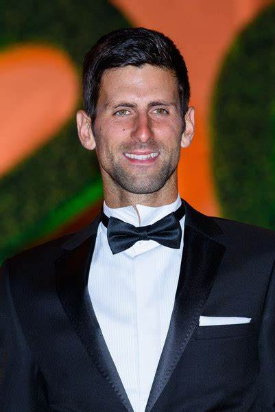

Poznate osobe nekada i sad
Kroz ovaj vizuelni put kroz vreme, istražujemo transformacije koje su oblikovale živote i karijere poznatih ličnosti širom sveta. Od ikona filma, muzike, sporta, do političkih figura i modnih legendi, pratimo njihove evolucije kroz godine. Uživajte u upoređivanju kako su se promenili izgledi, stilovi i uticaji ovih ikona i otkrijte šta je to što ih čini nezaboravnim u različitim epohama.
Robert De Niro
Robert De Niro je neosporna ikona filmske industrije, čiji su talent, predanost i izuzetna glumačka sposobnost učinili da se istakne kao jedan od najcenjenijih glumaca svoje generacije. Kroz nezaboravne uloge u filmovima poput "Kuma", "Taksiste" i "Razjarenog bika", De Niro je demonstrirao svoju neverovatnu transformacijsku moć i duboku predanost umetnosti glume, ostavljajući neizbrisiv trag u istoriji kinematografije.
Novak Đoković
Novak Đoković, globalna sportska ikona, proslavio se svojim neupitnim talentom, mentalnom snagom i neumornom posvećenošću tenisu. Rođen u Srbiji, Đoković je postao sinonim za izuzetnost na teniskom terenu, osvajajući brojne Grand Slam titule i postavljajući rekorde koji će dugo trajati. Njegova sposobnost da se izdigne izazovima, kako na terenu tako i van njega, čini ga uzorom mnogima širom sveta. Novak Đoković je više od tenisera - on je simbol istrajnosti, inspiracije i sportskog genija.
Johnny Logan
Johnny Logan, legendarni irski pevač i tekstopisac, osvojio je srca širom sveta svojim nezaboravnim nastupima i emotivnim pesmama. Poznat po svojoj moćnoj glasovnoj interpretaciji i melodičnim baladama, Logan je postao sinonim za kvalitetnu muziku. Njegova najpoznatija pesma "Hold Me Now" donela mu je pobedu na Eurosongu ne samo jednom, već čak dva puta, čime je zacementirao svoj status kao jedan od najuspešnijih izvođača u istoriji tog takmičenja. Loganova muzika ostaje relevantna i inspirativna, neprekidno dotičući srca slušalaca širom sveta.
Elon Musk
Elon Musk, vizionar, preduzetnik i inovator, promenio je način na koji svet posmatra tehnologiju, transport i energetiku. Rođen u Južnoj Africi, Musk je osnovao nekoliko revolucionarnih kompanija, uključujući Tesla Motors, SpaceX i Neuralink. Njegova strast prema istraživanju i revolucionarnim idejama dovela je do stvaranja autonomnih električnih automobila, ponovnog korišćenja raketa za svemirska putovanja i razvoja interfejsa mozak-računar. Muskova vizija o kolonizaciji Marsa i smanjenju uticaja fosilnih goriva na okolinu promenila je perspektivu globalne održivosti. Kroz svoje poduhvate, Elon Musk nastavlja da inspiriše milione ljudi širom sveta da sanjaju veće, smele snove i raduju se budućnosti punoj mogućnosti.
Lionel Messi
Lionel Messi, argentinski fudbalski virtuoz, neosporno je jedan od najvećih igrača u istoriji ovog sporta. Rođen u Rosariju, Messi je svojom neverovatnom igrom osvojio srca navijača širom sveta. Kroz svoju karijeru u Barseloni, gde je proveo veći deo svog života, Messi je oborio brojne rekorde, osvojio nebrojene trofeje i postao sinonim za perfekciju na fudbalskom terenu. Njegova sposobnost driblanja, preciznosti u pasu i neverovatna brzina u izvođenju čine ga jedinstvenim igračem koji redovno nadmašuje očekivanja. Njegova strast prema igri i posvećenost postizanju vrhunskih rezultata inspirisala je generacije mladih fudbalera širom sveta da sanjaju velike snove. Lionel Messi je više od fudbalera - on je legenda koja će zauvek ostati urezana u istoriju ovog sporta.
Tom Cruise
Tom Cruise, holivudska ikona, poznat je po svojoj neumornoj posvećenosti, strasti i izuzetnoj profesionalnosti u filmskoj industriji. Rođen u New Yorku, Cruise je započeo svoju karijeru kao mladi glumac, a ubrzo je postao jedan od najpoznatijih i najuticajnijih aktera u svetu filma. Njegova sposobnost da se izrazi kroz različite žanrove, od akcionih blokbastera do drame i naučne fantastike, čini ga veoma raznovrsnim glumcem. Kroz filmove poput "Top Gun", "Mission: Impossible" serijala i "Jerry Maguire", Cruise je osvojio srca publike širom sveta svojim karizmatičnim nastupima i neverovatnim akcijama. Van filmskog platna, Cruise je poznat i po svom humanitarnom radu i angažmanu u različitim humanitarnim organizacijama. Njegova strast prema izazovima i beskompromisna predanost umetnosti čine ga jednim od najpoštovanijih glumaca današnjice. Tom Cruise je više od glumca - on je simbol izuzetnosti i inspiracija milionima širom sveta.